Nature
Wildlife of the Poddle
Otters, bats, herons and a rare orchid: what lives along Dublin’s hidden river.
Where the wildlife is
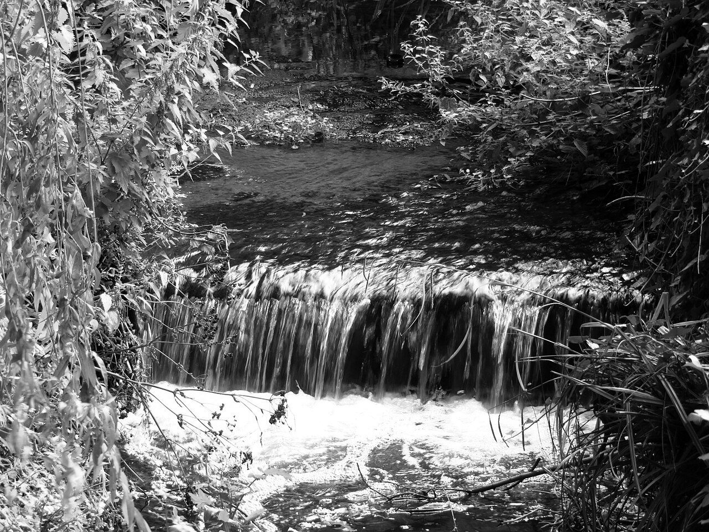

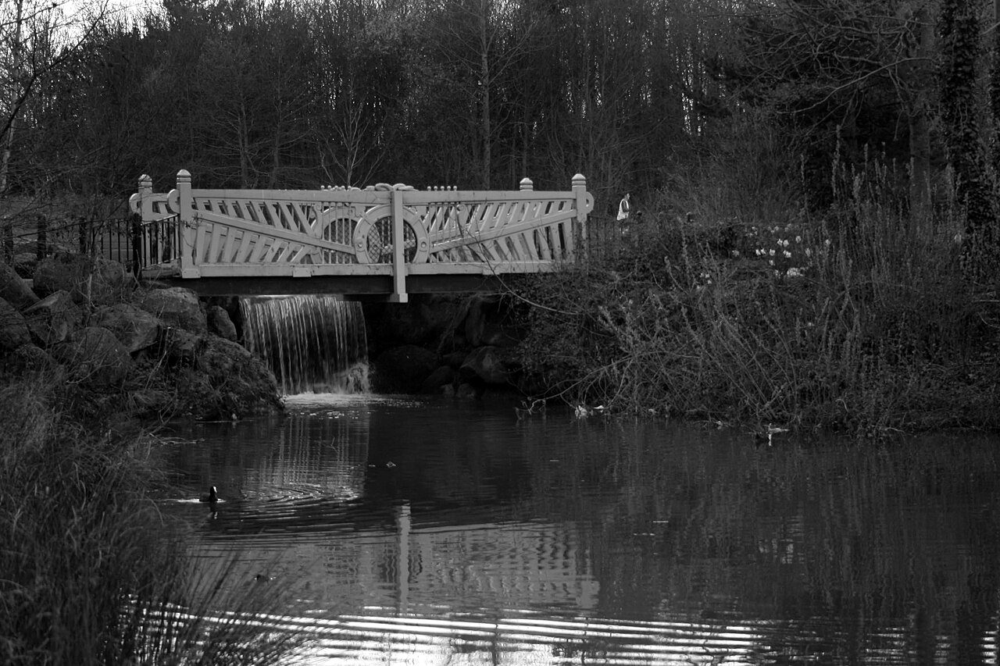

Almost everything that has been recorded lives on the open stretch of the river, through Tymon North, Tymon Park, Whitehall Park and Ravensdale Park. From Kimmage down, the Poddle runs mostly in walls and culverts, and very little has been found there.
Most of what we know comes from the ecologists who surveyed the river for the River Poddle Flood Alleviation Scheme between 2018 and 2022. Their reports are in the scheme’s planning file, and they are listed at the bottom of this page.
The water
Like most urban watercourses, the Poddle suffers from pollution. When the Environmental Protection Agency sampled it at Priory Road, Kimmage, in 2007, it scored Q3 on the EPA’s scale, which means moderately polluted, and samples taken at four sites in 2020 gave the same score. The small creatures living in the riverbed were the hardier kinds, such as leeches, midge larvae, water hoglice and small snails, rather than the mayflies and stoneflies of the cleanest mountain streams.
The city and county councils are working hard to address that. As part of the flood scheme, an integrated constructed wetland is being created in Tymon Park: a series of planted ponds that cleans the water naturally as it passes through, with the aim of bringing it up to a “good” standard.
Pollution is an old problem for the Poddle. In the 18th century the mills along its banks had already turned it into what Whitelaw and Walsh called “an immense sewer”, and there are accounts of cattle and horses dying after drinking from it.
Fish
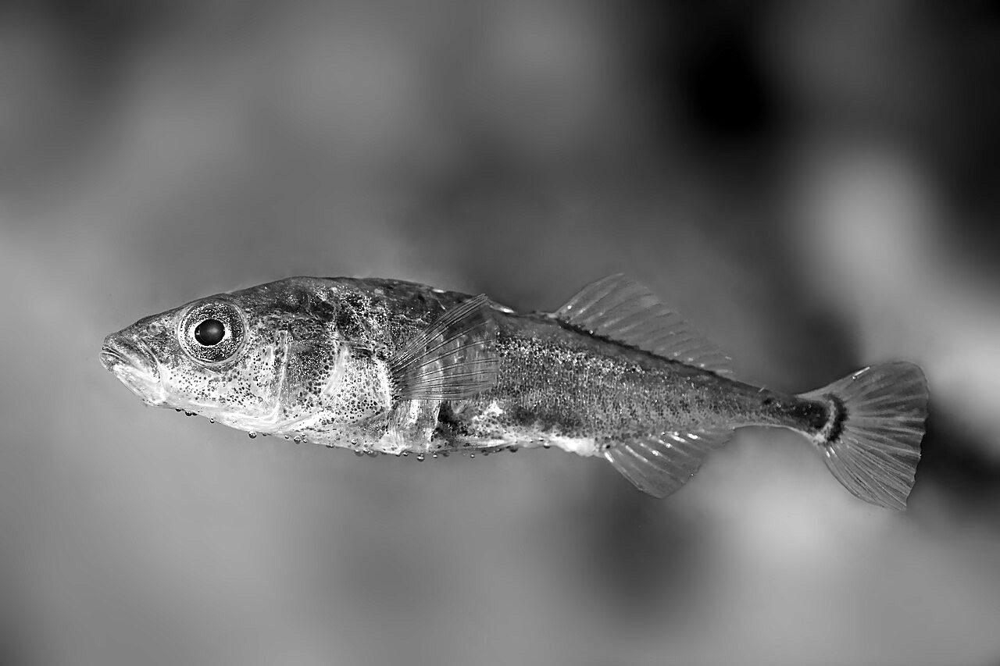

The only fish caught when the river was electrofished in August and September 2020 was the three-spined stickleback. There were hundreds at Whitehall Park, but only five to ten at each of the other sites. Inland Fisheries Ireland says minnows live in the river too.
There are no trout, salmon or eels. Inland Fisheries Ireland told the engineers that the Poddle is “not a salmonid river”. The 2020 survey found that the gravel beds should suit young brown trout and eels, and said their absence “suggests that there are barriers to fish movement”: the culverts, and the syphon that carries the river under the Grand Canal.
Otters
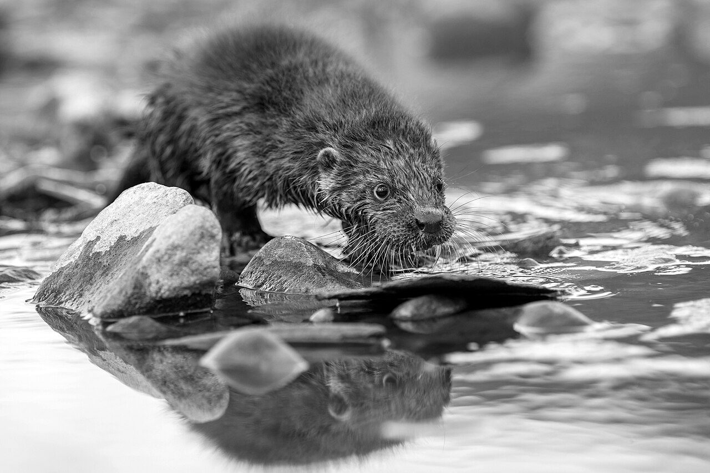

The otter is the river’s good-news story. In the surveys of 2018 and 2019, the ecologists found “no otter holts, nor any other evidence of otter”. Then in September 2020 a holt was found in Tymon North.
A survey in February 2021 recorded 11 signs of otters, including droppings (called spraints) and two holts, one in use. Fish scales from roach were found near Kimmage Cross Roads, possibly left by an otter, but no other signs were found below Tymon North. The ecologists described it as “a natural colonisation of the river by otters”.
The Poddle is still a minor otter river. A study of Dublin’s rivers for Dublin City Council found many more signs on the Dodder and the Tolka, and said the Poddle and the Camac “appeared to support far fewer otters”.
Bats, badgers and other mammals
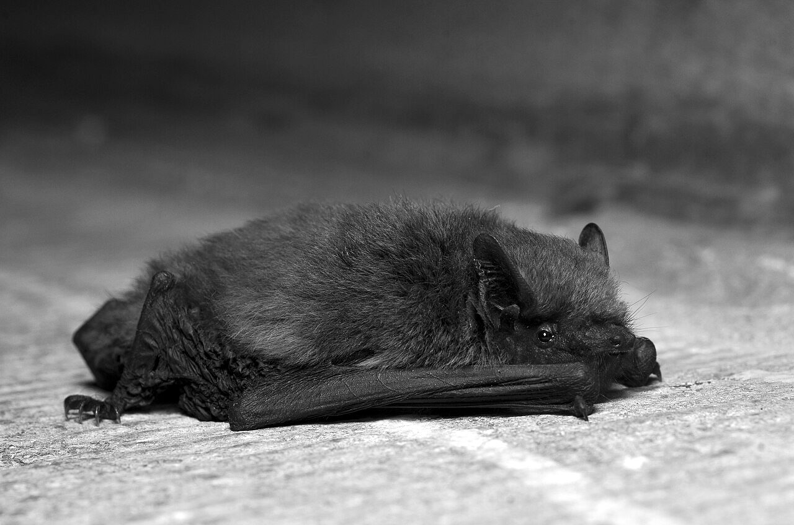
.jpg){kind=link}
Bats feed along the river and over the Tymon lakes. Surveys in 2018 and 2019 recorded the common pipistrelle, which was active all night, the soprano pipistrelle, including at Mount Argus, and Leisler’s bat, Ireland’s largest. A bat that was probably a Daubenton’s, which hunts insects just above the water, was also picked up over Tymon. Most activity was over the reedbeds at the edge of Tymon Lake. Old trees in Mount Argus Park and the grounds of Kimmage Manor could make good roosts.
Badgers have setts in Tymon North. Their exact location is kept out of the reports to protect them.
Hedgehogs, pygmy shrews and stoats have been recorded in the surrounding area and may use the river banks, though none were seen in the surveys.
Birds
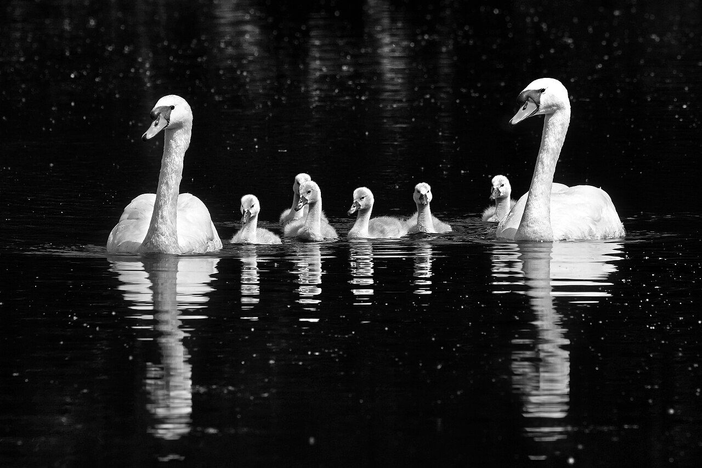
_and_cygnets.jpg){kind=link}
The Tymon lakes are the best place for birds on the river. Ecologists counted 19 kinds of waterbird there in early 2018, and 2,616 birds over eight visits in the winter of 2021–22. The commonest are black-headed gulls, common gulls, herring gulls, mallard, moorhens, coots, mute swans, tufted ducks, little grebes and teal. Wigeon, shoveler and snipe have also been seen.
Mute swans, mallard, coots and moorhens nest around the ponds. In April 2022 a swan was sitting on a nest in the reedbed at the south-east corner of Tymon Lake. The flood scheme’s plans include floating nesting platforms for the lake.
Grey herons and little egrets fish in the river and the ponds, and grey wagtails feed along the stream. A water rail was reported in the Tymon reedbeds in the winter of 2021–22, a new record that the ecologists rated of county importance. No kingfishers or dippers were seen, though both live on the Dodder nearby.
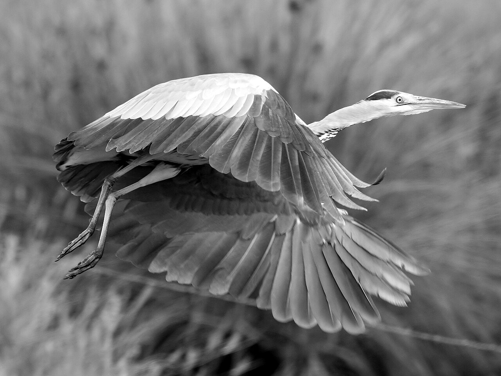
_(3).jpg){kind=link}
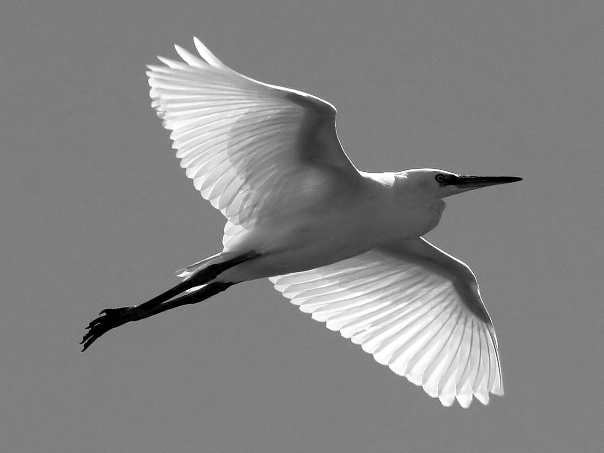
_(4).jpg){kind=link}
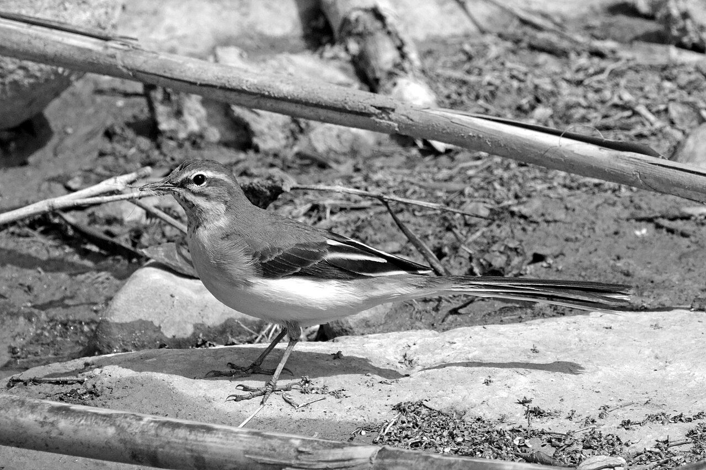
.jpg){kind=link}
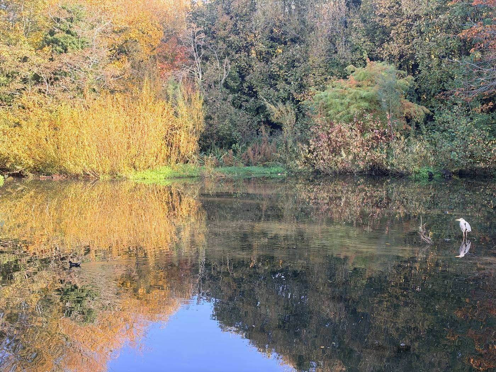
Tymon Park used to be an important feeding ground for Brent geese, which fly in from Arctic Canada for the winter: about 1,200 were reported in 2008 and 700 in 2009. Disturbance by dogs has largely stopped this, and only a few have been seen since. An Taisce argued that the flood scheme’s report played them down.
Frogs, newts and insects
Common frogs and smooth newts probably breed in the ponds at Tymon Park and Mount Argus, although the surveys did not find any. Dragonflies, including the brown rod dragonfly, hunt over the Tymon lakes, and the meadows and reedbeds hold a wide variety of insects.
Plants
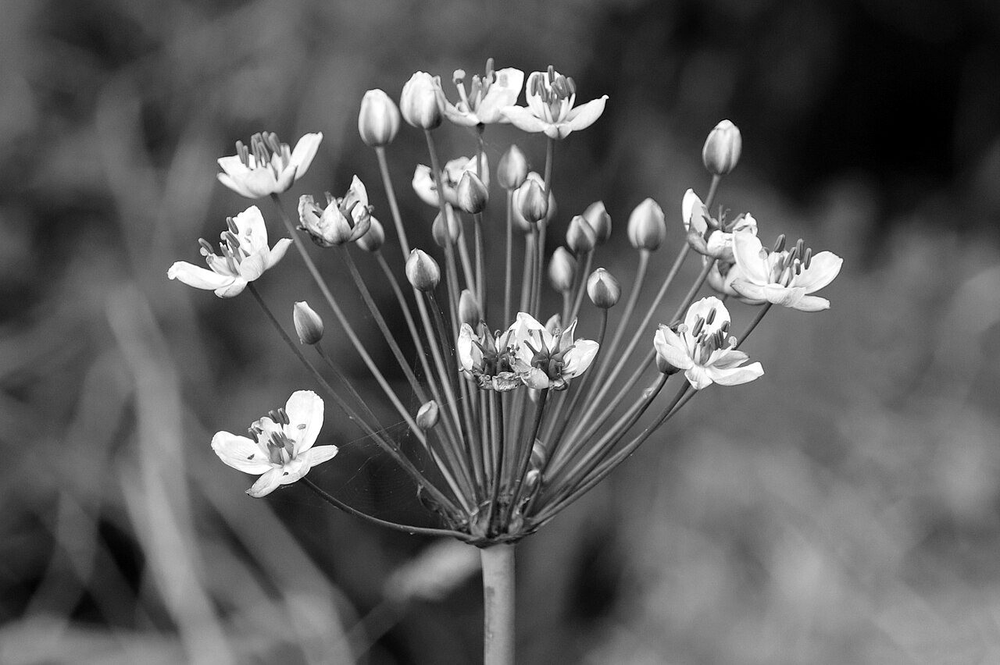

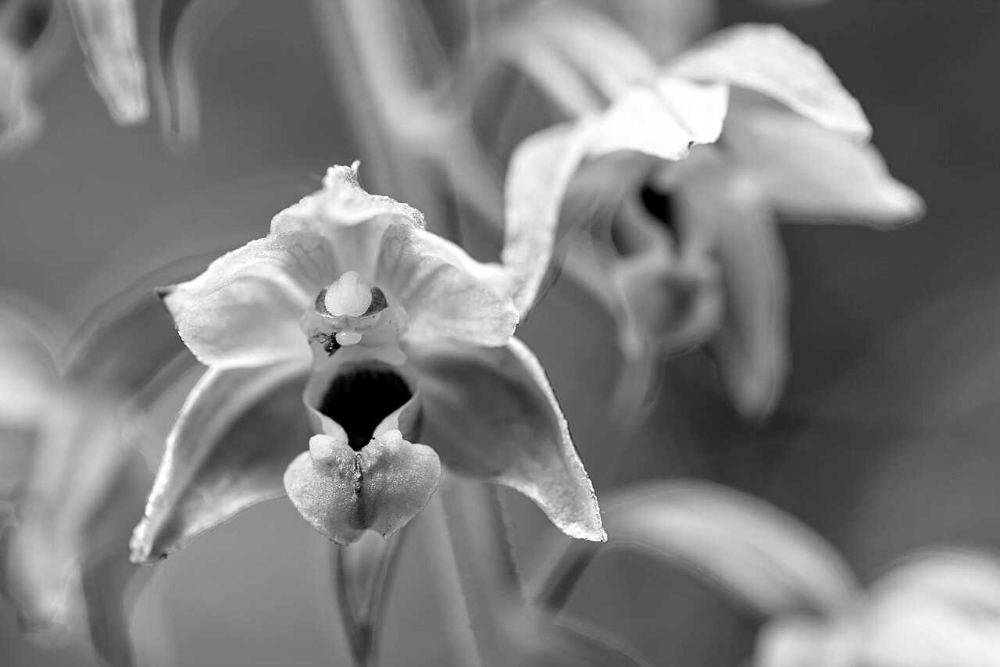
_14072016_01.jpg){kind=link}
In the river itself grow watercress, spiked water-milfoil, pink water-speedwell, pondweed and green algae. Around Tymon Lake there are reedbeds of common reed and bulrush, with yellow iris, great willowherb, meadowsweet and purple-loosestrife. The meadow north and east of the lake is rich in wildflowers, including yellow-rattle, selfheal and what is probably a common spotted-orchid.
Three rare plants have been found. Flowering rush, which is rare in Dublin, grows in the river below Tymon Lake, and the council has planted more at the Limekiln lakes. Galingale, a tall sedge, grows around Tymon Lake, in what may be its only wild site in Ireland, though it was probably brought in. And four stems of broad-leaved helleborine, a wild orchid, were found on bare ground near Fortfield Road.
The woods of Tymon Park are mostly beech, poplar, ash, horse chestnut, willow, maple, sycamore and birch, with wet willow and alder woodland around some of the ponds.
Three invasive plants have been recorded: giant rhubarb at Tymon Lake, which has since been removed, a small patch of Japanese knotweed in the north-west of Tymon Park, and Nuttall’s waterweed in the river channel.
Sources
These surveys were done for the River Poddle Flood Alleviation Scheme, except where noted. Records are of what the surveyors saw on the days they visited, so other animals and plants may well be there.
- Flood scheme EIAR, Chapter 7: Biodiversity (NM Ecology, February 2020)
- Electrofishing survey and Q-value analysis (AQUAFACT, 2020)
- Winter bird and mammal surveys, including the 2021 otter survey (NM Ecology, April 2022)
- The Echo: study of Dublin’s waterways finds 200 signs of otters
- Ask About Ireland: wildlife of the lakes in South Dublin’s parks
- Dublin Inquirer: residents debate the environmental impact of the flood scheme (March 2020)